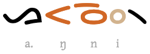
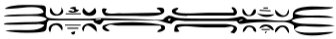
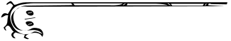
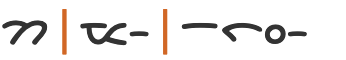
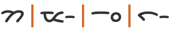

This page brings together basic information about the Batak script and its use for the Mandailing, Simalungun, Toba, PakPak, and Karo languages. It aims to provide a brief, descriptive summary of the modern, printed orthography and typographic features, and to advise how to write languages using the Batak script with Unicode.
Zero-width spaces have been added to the sample text so that it will wrap after orthographic syllables, rather than shoot off the right side of the page.
Usage & history
The Batak script is used on the island of Sumatra to write the five Batak dialects Karo, Mandailing, Pakpak, Simalungun, and Toba, which can differ as much as do the related languages English and Dutch. The script is taught in schools more for cultural purposes than as a practical writing system for Batak. The overwhelming majority of writing by Bataks is in Indonesian, as elsewhere in Indonesia). Batak script can be found in the signage of shops and governmental institutions.ek
ᯘᯮᯒᯖ᯲ᯅᯖᯂ᯲
It is thought that the script may be derived from the Kawi and Pallava scripts, both ultimately derived from the Indian Brahmi script, or from the hypothetical Proto-Sumatran script influenced by Pallava.ws For much more detail on Batak origins and development see Sejarah Aksara Batakuk.
The Batak script is an abugida. Consonants carry an inherent vowel which can be modified by appending vowel signs to the consonant. See the table to the right for a brief overview of features for the modern Batak orthography (the character counts are for a superset of all 5 languages described here). Each language uses its own set of consonants and vowel signs from this set, and several Unicode code points are specific to a particular language.
Batak text runs left to right in horizontal lines.
Words are not separated by spaces, and text segmentation doesn't pay attention to word boundaries.
The 33 consonant letters in the Unicode Batak block include many duplicates because of variations in the orthography from language to language. Repertoire extensions for 2 non-native sounds occur in Mandailing only, by applying the tompi diacritic to characters. ❯ consonants
Syllable-initial clusters appear to be restricted to prenasalised consonants (for which there are 2 dedicated letters) or nasal+consonant, which are written using an unpronounced standalone vowel, and these only occur in Karo. ❯ onsets
Word-final consonant sounds may be represented by 2 final-consonant diacritics. Otherwise, if nothing follows, they are ordinary consonants followed by a visible ᯲ [U+1BF2 BATAK PANGOLAT] (or ᯳ [U+1BF3 BATAK PANONGONAN] in Karo and Simalungun). ❯ finals
A peculiarity of Batak is that a syllable CVCv (where 'v' represents the vowel-killer) is rendered as CCVv when the vowel is expressed using a vowel sign. ❯ vowel_reorder
The Batak orthography has an inherent vowela, and represents vowels using language-specific selections from the superset of 9 vowel signs. There are no pre-base vowels or circumgraphs. All vowel signs are combining marks, and are stored after the base character. ❯ vowels
Batak words typically have a root that consists of 2 syllables, with the patterns CVCCVC, CVCV, CVCVC, or CVCCV.
Affixes added to the word can then make it longer.
Phonology
The following represents the repertoire of the Batak languages Toba, Karo, Mandailing, Simalungun, and Pakpak.
Click on the sounds to reveal locations in this document where they are mentioned.
Phones in a lighter colour are non-native or allophones. Source Wikipedia.
Vowel sounds
Plain vowels
ə is present only in Karo and Pakpak. The languages of the southern group substitute the sound o in words that are otherwise the same.
Consonant sounds
labial
dental
alveolar
palatal
velar
glottal
stop
pb
td
kɡ
ʔ
prenasalised
ᵐb
ⁿd
affricate
t͡ʃd͡ʒ
fricative
s
h
nasal
m
n
ɲ
ŋ
approximant
w
l
j
trill/flap
r
Final h doesn't occur in Toba or Mandailing.
w and j are recent additions to the Toba and Simalungun languages, inherited from Indonesian loan words.
Vowels
Inherent vowel
a following a consonant is not written, but is seen as an inherent part of the consonant letter, so ka is written by simply using the consonant letter.
ᯂ
kaU+1BC2 BATAK LETTER HA
Vowel signs
Non-inherent vowel sounds that follow a consonant are represented using vowel signs, eg.
ᯂᯪ
kiːU+1BC2 BATAK LETTER HA + U+1BEA BATAK VOWEL SIGN I
Batak vowel signs are all combining characters. All vowel signs are stored after the base consonant. There are no vowel signs displayed before the base, and there are no circumgraphs.
An orthography that uses vowel signs is different from one that uses simple diacritics or letters for vowels in that the vowel signs may be attached to the syllable onset , rather than just applied to the letter of the immediately preceding consonant. See finals.
Four vowel signs are spacing marks, meaning that they consume horizontal space when added to a base consonant.
Combining marks used for vowels
Batak languages use the following dedicated combining marks for vowels. Some languages have additional sounds, and some assign the same symbols to different sounds.
Toba & Mandailing
ᯪ␣ᯮ␣ᯩ␣ᯬ
Pakpak
ᯪ␣ᯮ␣ᯩ␣ᯬ␣ᯨ
Simalungun
ᯫ␣ᯮ␣ᯯ␣ᯩ␣ᯬ␣ᯭ
Karo
ᯪ␣ᯫ␣ᯬ␣ᯩ␣ᯨ␣ᯭ␣ᯧ
Different characters may be used for the same sound in Karo.
U ligatures
The vowel sign ᯮ [U+1BEE BATAK VOWEL SIGN U] often ligates with the base character, as can be seen in the following examples:
Batak has independent vowels for 3 sounds. The use of ᯤ [U+1BE4 BATAK LETTER I] and ᯥ [U+1BE5 BATAK LETTER U], rather than the vowel sign combinations shown above, is optional, and spelling of words may vary even within the same document.ab
ᯤᯉᯥᯑᯉ᯲ᯀᯎᯂ᯲
ᯀ [U+1BC0 BATAK LETTER A] may also represent the sound ha for Pakpak and Karo. The reading is ambiguous.
Vowel length
tbd
Nasalisation
tbd
Tones
Batak is not a tonal language.
Vowel sounds to characters
This section maps the vowel sounds of several Batak languages to common graphemes in the Batak orthography, grouped by vowel sign ( vs ) or standalone ( s ). Click on a grapheme to find other mentions on this page (links appear at the bottom of the page). Click on the character name to see examples and for detailed descriptions of the character(s) shown.
Sounds listed as 'infrequent' are allophones, or sounds used for foreign words, etc.
The only syllable-initial consonant clusters in Batak appear to be nasal+consonant or prenasalised consonants. These appear to be limited to the Karo languageuk.
The Surat Batak courseware describes an approach for other nasal+consonant combinations in their description of the Karo language. This involves writing a syllable-final nasal consonant after an unpronounced, standalone schwa (ᯀᯧ [U+1BC0 BATAK LETTER A + U+1BE7 BATAK VOWEL SIGN E]). An initial ŋ however is written ᯀᯰ [U+1BC0 BATAK LETTER A + U+1BF0 BATAK CONSONANT SIGN NG]. Here are some examples.
ᯀᯧᯉ᯳ᯗᯧᯒᯧᯔ᯳
ᯀᯧᯉ᯳ᯠᯪᯑᯱᯂᯧᯉ᯳
ᯀᯧᯉ᯳ᯐᯬᯒ᯳ᯐᯬᯒ᯳
ᯀᯰᯂᯧᯒᯪᯂᯧᯉ᯳
Final consonants
ᯰ␣ᯱ
Batak uses one of 2 diacritics to indicate syllabe-final consonants.
ᯱ [U+1BF1 BATAK CONSONANT SIGN H] is used for final -h in Karo, Mandailing, and Simalungun. (This consonant doesn't appear in syllable-final position in Toba and Mandailing.)
Otherwise a normal consonant letter is used, followed by the vowel-killer, which is either ᯲ [U+1BF2 BATAK PANGOLAT] (Mandailing, Pakpak, Toba) or ᯳ [U+1BF3 BATAK PANONGONAN] (Karo, Simalungun).
ᯞᯂ᯲ᯞᯂ᯲ᯥᯑᯉ᯲
Vowel reordering
Batak has a unique behaviour if a vowel sign is used between onset and coda consonants.
Although consonants and vowels are typed and stored in the order they are pronounced, the rendered order is: <onset><coda><vowel><vowel-killer>
If a vowel sign is used, the glyphs for the onset and coda consonants are placed side by side, and are followed by the glyphs for the intervening vowel and the vowel-killer. This reordering is produced by the font, and the typed order or order stored in memory remains the same as the spoken order. fig_finals shows an example.

The word a.ŋin ('wind') showing the location of onset and coda consonants and the vowel sign after they have been rearranged by the font. The in memory or typed order is [a ŋ i n ∅].
This also applies to non-spacing marks, such as -u in the following.
ᯐᯒᯮᯔ᯲
Consonant clusters
Batak consonant letters do not interact to create conjuncts.
Where a syllable onset folllows a syllable coda, the lack of vowels is indicated using a vowel killer sign. See novowel and finals.
Consonant length
tbd
Consonant sounds to characters
This section maps consonant sounds for languages using the Batak script to common graphemes in the orthography. Click on a grapheme to find other mentions on this page (links appear at the bottom of the page). Click on the character name to see examples and for detailed descriptions of the character(s) shown.
Sounds listed as 'infrequent' are allophones, or sounds used for foreign words, Sanskrit, etc. If no language is specified, the assignment is valid for all languages covered here.
To indicate that a consonant is not followed by an inherent vowel, Mandailing, Pakpak, and Toba use ᯲ [U+1BF2 BATAK PANGOLAT], whereas Karo and Simalungun use ᯳ [U+1BF3 BATAK PANONGONAN]. These characters are used after final consonants whether they appear word-medially or word finally.
ᯗᯉ᯲ᯑᯰᯀᯮᯑᯉ᯲ᯂᯉ᯳ᯘᯰᯀᯉᯂ᯳
See also finals, which describes some unusual behaviour for final consonants that are preceded by a vowel sign.
Encoding choices
There appears to be little to report with regards to Batak encoding choices. No characters decompose during NFD normalisation, no characters have an appearance that can be created by combining others, and no glyphs are easily mistaken for other Unicode characters.
CVC ordering
One potential trap to be aware of is described in vowel_reorder. Essentially, characters making up syllables with the shape CVCv are stored in memory in that order, and not in the order CCVv in which they are displayed. The display order is produced by the font, and not by typing the characters in the visual order.
Numbers
tbd
Text direction
Batak text runs left to right in horizontal lines that flow from top to bottom.
References to vertical, bottom to top, writing really refer to sideways writing on things such as bamboo, rather than to a vertical writing mode, according to Everson and Kozok.ek
This section brings together information about the following topics:
writing styles;
cursive text;
context-based shaping;
context-based positioning;
baselines, line height, etc.;
font styles;
case & other character transforms.
Batak text is not cursive (ie. joined up like Arabic).
The orthography has no case distinction, and no special transforms are needed to convert between characters.
Context-based shaping & positioning
The main shaping behaviour takes place where CVC syllables swap the displayed order of the nucleus and coda (although the in memory sequence retains the same order as the sounds are spoken). For more information see vowel_reorder.
Although it is a Brahmi-derived script, there are no conjunct forms.
Multiple combining marks rendered side by side above the base.
Another important aspect of shaping occurs where ᯮ [U+1BEE BATAK VOWEL SIGN U] ligates with or is positioned differently according to its base. For example:
ᯖᯮ ᯇᯮ ᯌᯮ ᯞᯮ
Examples of shaping and positioning applied to ᯮ [U+1BEE BATAK VOWEL SIGN U] when it follows a particular base character.
Font styling & weight
tbd
Graphemes
The rules for segmenting Batak are not clear. See a discussion of approaches to line-breaking.
᯼ [U+1BFC BATAK SYMBOL BINDU NA METEK] and ᯽ [U+1BFD BATAK SYMBOL BINDU PINARBORAS] are used to indicate the beginning of paragraphs and stanzas. It can be written as a large sign that physically separates the sections of text, eg. by means of a long trailing line leading from it.
Batak also uses symbols to begin texts which do not appear to have Unicode code points. These are often decorative and take many forms.
A pustaha text (see generallayout) will often begin with a godang bindu, while bamboo texts will commonly begin with the pinarjolma bindu.


Examples of the godang bindu (top), and the pinarjolma bindu (bottom).
Bracketed text
tbd
Quotations & citations
tbd
Emphasis
tbd
Abbreviation, ellipsis & repetition
tbd
Inline notes & annotations
tbd
Other punctuation
tbd
Other inline text decoration
tbd
Line & paragraph layout
Line breaking & hyphenation
The rules for where line-break opportunities occur are not very clear. The following paragraphs describe alternative approaches. After each description, the effect is shown on line-break opportunities for the word ᯂᯔ᯳ᯇᯪᯞ᯳
.
Currently, Unicode properties assigned to Batak letters have the value AL (ordinary alphabetic and symbol characters), which requires other characters to provide break opportunities; otherwise, unless tailored rules are applied, no line breaks are allowed between pairs of letters. This is clearly inappropriate for Batak, given the lack of spaces and the paucity of punctuation marks. As a result, Batak text usually runs off the right edge of a web page, because the line is not broken.
Everson & Kozok, in their Batak Unicode proposalek, say that lines are broken after a 'full orthographic syllable', which they define to be C(V(Cp|F)) where a consonant C may be followed by a vowel V which may be followed either by a killed consonant Cp or a final -ng or -h F. This actually represents a full phonetic syllable, including cases such as ᯂᯂ᯲kak.
On the other hand, proposals are currently being discussed by the Unicode Script Ad Hoc committee to break after a BCCS except where a vowel-killer appears – in which case, the whole phonetic syllable would be kept together. The latter exception is primarily motivated by the limitations of current rendering systems, which would struggle to achieve the reordering of final-consonant and vowel sign before a vowel-killer if a line-break intervenes.

However, it is not hard to find examples of written Batak where line-breaks can occur before a vowel sign or a vowel-killer, indicating that line-break opportunities can occur before any spacing glyph. Note that the vowel sign and vowel-killer are represented in Unicode as combining marks, so we are splitting the BCCS unit here. Note also that the order of characters doesn't change. For examples, see handwritten examples of line-initial vowel-killer, and vowel sign, and both in this printed text.
If line-breaks were introduced at grapheme cluster boundaries, the order of characters in a syllable rendered as CCVv would presumably not be maintained, so this does not appear to be a viable approach.

Text alignment & justification
tbd
Text spacing
tbd
This section looks at ways in which spacing is applied between characters over and above that which is introduced during justification.
Baselines, line height, etc.
tbd
Batak uses the so-called 'alphabetic' baseline, which is the same as for Latin and many other scripts.
Counters, lists, etc.
tbd
Styling initials
tbd
Page & book layout
This section is for any features that are specific to Batak and that relate to the following topics:
general page layout & progression;
grids & tables;
notes, footnotes, etc;
forms & user interaction;
page numbering, running headers, etc.
General page layout & progression
The following is a description of media used for writing Batak, taken from Wikipediawsi,#Media.
Batak letters are traditionally written in a number of media, among which the most common are bamboo, bone, and bark. Manuscripts with these media can be found in various sizes and sophistication.
Common everyday writings are inscribed on the surface of bamboo or bone with a small knife. These strokes are then blackened with soot to improve readability. Bamboo and bones written on Batak letters are commonly used as daily tools, for example as storage tubes for areca nut or necklaces as well as amulets to ward off evil.
Traditional Batak priests (datu) write their knowledge on concertina-like scrolls called pustaha. To make pustaha, the bark of the agarwood tree ( Aquilaria malaccensis) is cut and mashed into long sheets called laklak . The length of these sheets can range from 60 cm to 7 m, but the largest known pustaha (now stored in the Tropenmuseum, Netherlands) is around 15 m long. This sheet of laklak is then folded, and both ends glued to a wooden cover called lampak, which often has a Boraspati lizard engraved on it. Unlike the bamboo and bone script, the Pustaha script is written in ink using a pen from the ribs of palm leaves (Arenga pinnata) called suligi or a pen from buffalo horn called tahunan.
Paper was only used in limited quantities from the mid-19th century onwards, but bamboo, bone, and bark continued to be used as the main medium for writing Batak script until the 20th century when the tradition of writing Batak script began to disappear.


{kind=link}